show us the stuff!
I like collecting things. Sure, I might not have a shelf full of figurines, sketchbooks, or anything terribly eye-catching, but I've got a lot to say about what I do have.
The rest of the page pretty much speaks for itself, so feel free to browse!
hello! i forgot why i put this here!
Plushies
Did you know I like Minecraft? Well, guess what! 80% of my plushies are all from Minecraft! But don't leave just yet—I have more interests, I swear!!
Anyhoo, here's a list of my favorites. I'll make it unique!
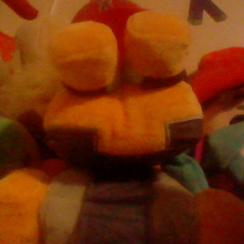 |
Frog (Minecraft)
I got this (admittedly wrinkled) twerp as a Christmas gift. He also has a brass penny in his mouth, which I made in a chemistry lab.
|
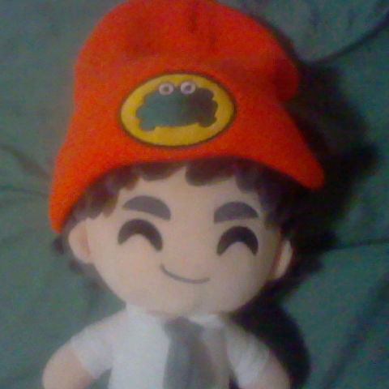 |
Ross Federman
Back in my middle school days, I was kinda obsessed with Tally Hall. This is the result of that. I like him.
|
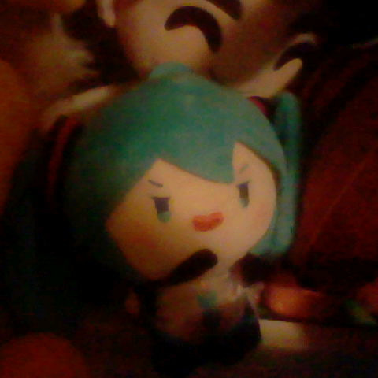 |
Hatsune Miku
I wouldn't call myself a big Miku fan, but I got this along with a Warden plush just for the hell of it. She's cute.
|
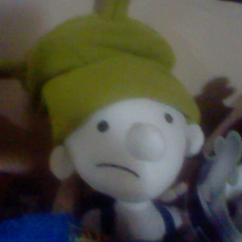 |
Greg Heffley
I'm not a big reader, but I made an exception for ol' Greg here as a kid. My personal library has a shelf just for DOAWK books (1-20).
|
I also have these select plushies:
Baby sheep, blue sheep, orange sheep, baby cow, axolotl, dolphin, arctic fox, armadillo, turtle, goat, baby panda, trader llama, chicken jockey, and a Bob-omb.
CDs
I'm a bit of a music man, if I do say so myself. The two CDs above are from my favorite bands ever. I've been asked if I collect vinyl, but it's too unwieldy for my liking.
Like the plushies, I'll go through some favs. Only this time, there'll be a lot more of 'em!
Hover over the covers for their names!
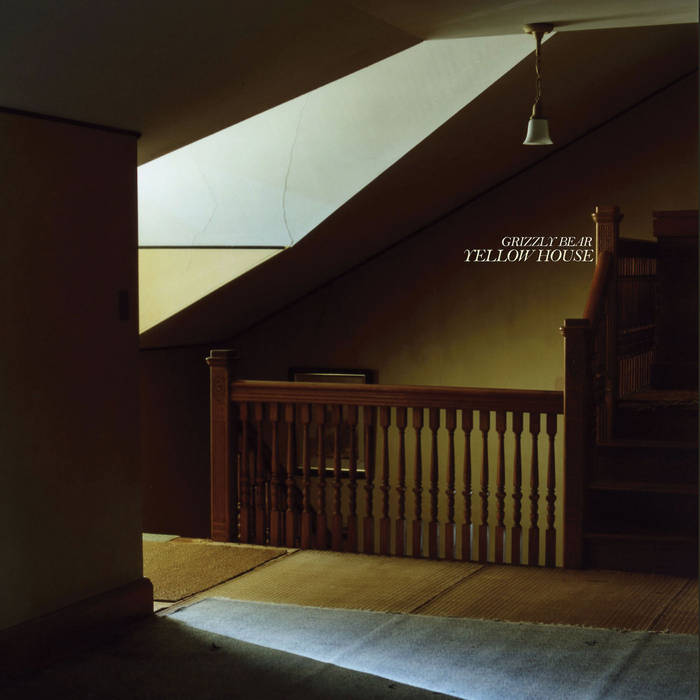
Grizzly Bear - Yellow House
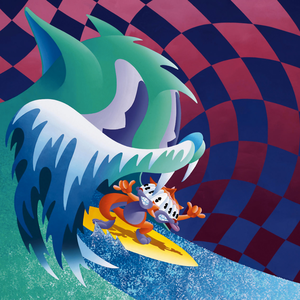
MGMT - Congratulations
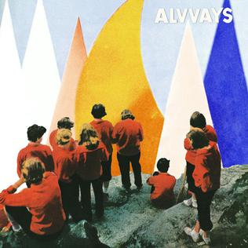
Alvvays - Antisocialites
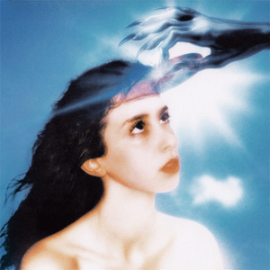
Magdalena Bay - Imaginal Disk
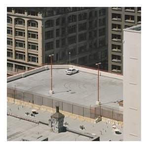
Arctic Monkeys - The Car
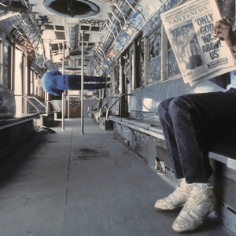
Vampire Weekend - OGWAU
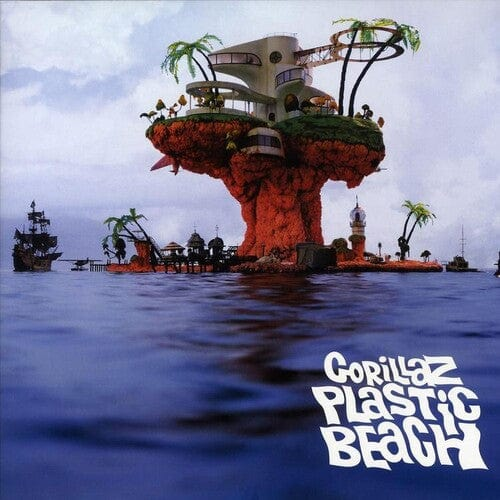
Gorillaz - Plastic Beach
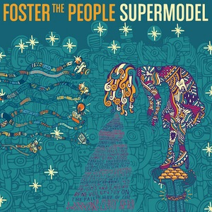
Foster the People - Supermodel
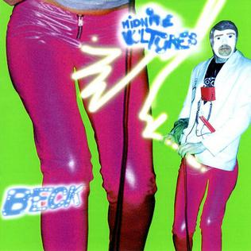
Beck - Midnite Vultures
My favorite album of all time is In Rainbows by Radiohead. It's probably gonna stay that way for a long while. Second place is Shields by Grizzly Bear.
Check out my Last.fm for my listening habits.
I also have an AOTY for albums ratings and such.
Consoles
I'm quite fond of video games, and I've collected a sizeable amount of consoles over the years. So here, I'll go over my favorites and what I like most about them!
I'll also mention some others at the end. I still love them, but they'd be the last ones saved from a house fire.
And don't mind the fact that these are all handhelds.
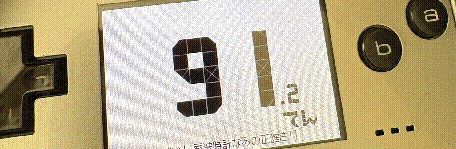 |
Game Boy Micro (2005)
I may have only gotten this thing two days before writing this, but I already love it to death. Though you're probably wondering, "Out of every Game Boy you could've gotten, why a Micro?"
It has a headphone jack. Not to mention, the screen quality is excellent despite its size. Plus, the console is really goddamn sleek and extremely portable! It's the ultimate Game Boy for those who don't really care about the Game Boy.
Despite how the picture looks, my GBM is actually silver. It also came with a game, that being the original Super Mario Bros. (in a red cartridge)!
|
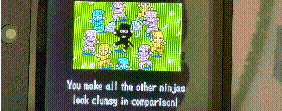 |
Nintendo 2DS (2013)
While not the sharpest tool in the shed, my original 2DS was a big part of my childhood. If there's one reason to keep this thing around, it's for all the dumbass pictures I took.
This thing is also unmodded. I was thinking about breathing new life into it a few months back, but that was until I got...
|
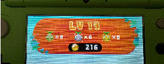 |
New Nintendo 2DS LL Creeper Edition (2018)
My prized possession. I mean, what more could I say about it? I love Minecraft, and my old 2DS is over a decade old, so of course I'd set my sights on the perfect model.
I don't care if you think New 2DS XL's are the weakest of the bunch. This console is HEAVENLY. It's green, looks mean, and is a fully modded beast of a machine. Not only did I get a nearly mint condition console, but it also came with the box! Not like I keep it in there; I bought a case for it.
Half the time, though, I don't use the 2DS for games. I use it for taking pictures! There's not a whole lot to look at right now, but I'm gonna be lugging this thing around for a long while. It'll be fun to look at a few decades down the line.
|
And these are all the consoles I care slightly less about:
Nintendo Wii, Wii U, Playstation 4, Nintendo Switch, Switch 2, The Leapfrog which I probably threw away years ago